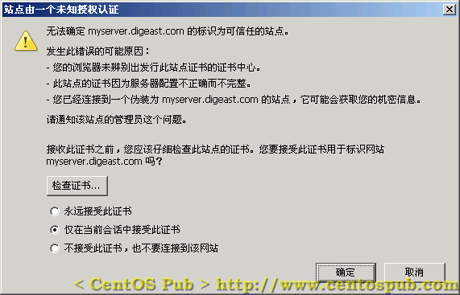

<<< 返回［配置详解］索引
< 让服务器支持安全 HTTP 协议（ HTTPS ） > （最近更新日：2006/08/26）
在我们通常用“http://”这样的方式来访问网站的时候，传输内容是可能被别人截获的，因为其内容是通过明文传输，所以在传递一些隐私、以及密码相关的信息时，就显得非常的不安全。在一些比较正式的网站、以及一些银行相关的网站中，一些需要提交隐私或者重要级别比较高的密码时，都采用 “https://”的方式，来将传输内容加密，从而保证用户安全和避免隐私的泄漏。
在这里，我们通过mod_ssl来使我们的服务器也支持HTTPS。
首先通过yum来在线安装mod_ssl。
[root@sample html]# yum -y install mod_ssl ← 在线安装mod_ssl
Setting up Install Process
Setting up repositories
Reading repository metadata in from local files
Reducing Dag RPM Repository for Red Hat Enterprise Linux to included packages only
Finished
Parsing package install arguments
Resolving Dependencies
--> Populating transaction set with selected packages. Please wait.
---> Downloading header for mod_ssl to pack into transaction set.
mod_ssl-2.0.52-28.ent.cen 100% |=========================| 25 kB 00:00
---> Package mod_ssl.i386 1:2.0.52-28.ent.centos4 set to be updated
--> Running transaction check
--> Processing Dependency: libnal.so.1 for package: mod_ssl
--> Processing Dependency: libdistcache.so.1 for package: mod_ssl
--> Restarting Dependency Resolution with new changes.
--> Populating transaction set with selected packages. Please wait.
---> Downloading header for distcache to pack into transaction set.
distcache-1.4.5-6.i386.rp 100% |=========================| 7.2 kB 00:00
---> Package distcache.i386 0:1.4.5-6 set to be updated
--> Running transaction check
Dependencies Resolved
=============================================================================
Package Arch Version Repository Size
=============================================================================
Installing:
mod_ssl i386 1:2.0.52-28.ent.centos4 base 98 k
Installing for dependencies:
distcache i386 1.4.5-6 base 111 k
Transaction Summary
=============================================================================
Install 2 Package(s)
Update 0 Package(s)
Remove 0 Package(s)
Total download size: 209 k
Downloading Packages:
(1/2): distcache-1.4.5-6. 100% |=========================| 111 kB 00:00
(2/2): mod_ssl-2.0.52-28. 100% |=========================| 98 kB 00:00
Running Transaction Test
Finished Transaction Test
Transaction Test Succeeded
Running Transaction
Installing: distcache ######################### [1/2]
Installing: mod_ssl ######################### [2/2]
Installed: mod_ssl.i386 1:2.0.52-28.ent.centos4
Dependency Installed: distcache.i386 0:1.4.5-6
Complete! |
[1] 建立服务器密钥
[root@sample conf]# cd /etc/httpd/conf ← 进入HTTP服务器配置文件所在目录
[root@sample conf]# rm -f ssl.*/server.* ← 删除默认或残留的服务器证书相关文件
[root@sample conf]# make genkey ← 建立服务器密钥
umask 77 ; \
/usr/bin/openssl genrsa -des3 1024 > /etc/httpd/conf/ssl.key/server.key
Generating RSA private key, 1024 bit long modulus
................++++++
.................................................................................................++++++
e is 65537 (0x10001)
Enter pass phrase: ← 在这里输入口令
Verifying - Enter pass phrase: ← 确认口令，再次输入
[root@sample conf]# openssl rsa -in ssl.key/server.key -out ssl.key/server.key ← 从密钥中删除密码（以避免系统启动后被询问口令）
Enter pass phrase for ssl.key/server.key: ← 输入口令
writing RSA key |
[2] 建立服务器公钥
[root@sample conf]# make certreq ← 建立服务器密钥
umask 77 ; \
/usr/bin/openssl req -new -key /etc/httpd/conf/ssl.key/server.key -out /etc/httpd/conf/ssl.csr/server.csr
You are about to be asked to enter information that will be incorporated
into your certificate request.
What you are about to enter is what is called a Distinguished Name or a DN.
There are quite a few fields but you can leave some blank
For some fields there will be a default value,
If you enter '.', the field will be left blank.
-----
Country Name (2 letter code) [GB]:CN ← 输入国名
State or Province Name (full name) [Berkshire]:Heilongjiang ← 输入省名
Locality Name (eg, city) [Newbury]:Harbin ← 输入城市名
Organization Name (eg, company) [My Company Ltd]:www.centospub.com ← 输入组织名（任意）
Organizational Unit Name (eg, section) []: ← 不输入，直接回车
Common Name (eg, your name or your server's hostname) []:www.centospub.com ← 输入通称（任意）
Email Address []:yourname@yourserver.com ← 输入电子邮箱地址
Please enter the following 'extra' attributes
to be sent with your certificate request
A challenge password []: ← 不输入，直接回车
An optional company name []: ← 不输入，直接回车 |
[3] 建立服务器证书
[root@sample conf]# openssl x509 -in ssl.csr/server.csr -out ssl.crt/server.crt -req -signkey ssl.key/server.key -days 365 ← 建立服务器证书
Signature ok
subject=/C=CN/ST=Heilongjiang/L=Harbin/O=www.centospub.com/CN=www.centospub.com/emailAddress=yourname@yourserver.com
Getting Private key |
[4] 设置SSL
[root@sample conf]# vi /etc/httpd/conf.d/ssl.conf ← 修改SSL的设置文件
#DocumentRoot "/var/www/html" ← 找到这一行，将行首的“#”去掉
↓
DocumentRoot "/var/www/html" ← 变为此状态 |
[5] 重新启动HTTP服务器，让SSL生效
[root@sample conf]# /etc/rc.d/init.d/httpd restart ← 重新启动HTTP服务器
Stopping httpd: [ OK ]
Starting httpd: [ OK ] |
[6] 设置防火墙允许SSL
[root@sample conf]# vi /etc/sysconfig/iptables ← 编辑防火墙配置文件
-A RH-Firewall-1-INPUT -m state --state NEW -m tcp -p tcp --dport 80 -j ACCEPT ← 找到这一行，接着添加如下行：
-A RH-Firewall-1-INPUT -m state --state NEW -m tcp -p tcp --dport 443 -j ACCEPT ← 开放443号端口，允许SSL
[root@sample conf]# /etc/rc.d/init.d/iptables restart ← 重新启动防火墙，使设置生效
Flushing firewall rules: [ OK ]
Setting chains to policy ACCEPT: filter [ OK ]
Unloading iptables modules: [ OK ]
Applying iptables firewall rules: [ OK ] |
可以通过自用PC来测试SSL。打开浏览器，在地址栏输入“https://服务器IP地址”或者“https://你的域名”后，如果出现提示安装服务器证明书的窗口（图样如下），说明服务器已经支持SSL。

这时，如果选择“永远接受此证书”，然后点击确定后，再次通过HTTPS协议访问该站点，将不会再弹出此窗口提示安装服务器证书。